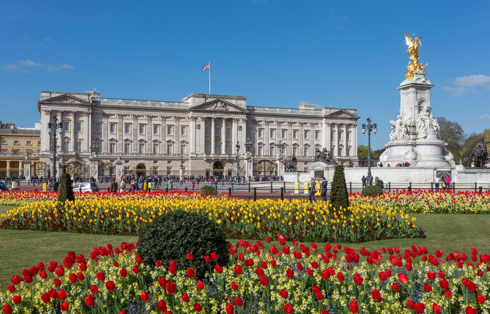

Le Palais de Buckingham est la résidence officielle de la monarchie britannique à Londres. Situé au cœur de la ville, le palais est utilisé pour des cérémonies d'État et des événements officiels. Les visiteurs peuvent assister à la relève de la garde devant le palais, une cérémonie emblématique. Bien que l'intérieur du palais ne soit généralement pas ouvert au public, les jardins de Buckingham Palace peuvent être explorés pendant certaines périodes de l'année. Le palais est également un incontournable pour les amateurs de photographie, avec son architecture majestueuse et son histoire royale.
COME AND VISIT
Palais de Buckingham

La tour de londres
La Tour de Londres est une forteresse historique située sur la rive nord de la Tamise. Construite au XIe siècle par Guillaume le Conquérant, elle a servi de palais royal, de prison et de lieu d'exécution. Aujourd'hui, la Tour de Londres est connue pour abriter les joyaux de la Couronne britannique, une collection impressionnante de diamants, de rubis, et d'autres précieuses pièces. Les visiteurs peuvent également explorer les différentes tours, les remparts et découvrir l'histoire fascinante des figures notables qui ont été liées à la Tour au fil des siècles.
Le Tower Bridge
.jpeg)
Le Tower Bridge est l'un des ponts les plus emblématiques de Londres, traversant la Tamise près de la Tour de Londres. Construit entre 1886 et 1894, son design unique avec ses deux tours et ses passerelles suspendues en fait une œuvre d'ingénierie remarquable. Le pont est souvent confondu avec le London Bridge, mais sa structure distincte et ses levées basculantes pour laisser passer les navires en font une attraction majeure. Les visiteurs peuvent également découvrir son histoire et profiter de superbes vues sur la ville depuis les passerelles piétonnes.